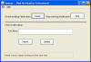

New Run Time Notification
Notification is dynamically alterable with the New Run Time
Notify GUI/Non-GUI. During the session, if Tymeac finds a problem with
notification, then Tymeac sets notification as unavailable. You may fix the
problem and reset notification, stop all notification or set a new Notification
Function below.
The non-frame version of this class is TyNewRTNotifyClient, below.

Elements
Function Name -- Enter the name of the New Tymeac
Notification Function.
Buttons
Reset -- Re-verifies the existing Notification Function on
the Server. If all goes well, then Notification is restored.
Stop -- Stops all Notification on the Server.
Import -- Fetches the current Notification Function from
the Server.
Update -- Fill in a new Notification Function and press to
update on the Server. If you never had Notification at Server start-up, then
you can add it now.
Message Block at bottom : -- (xx) is the return code for the non-gui
class. This is an information message:
(-1) Connection failure -- The RMI connection failed or the Tymeac Server
returned an invalid message.
Since Tymeac is fully open-source now, you must go to the source code to
find the return codes. All codes are public static final
int values in Class com.tymeac.base.SetUpNotify.java. As of Release 6.2
they are as follows:
public
static
final
int
NotifySuccess =
0; // success
public
static
final
int
NotifyNoCurr
= 1; // no current notify
function
public
static
final
int
NotifyNotNec
= 2; // notify
doesn't need resetting
public
static
final
int
NotifyFailVery
= 3; // failed to verify
public
static
final
int
NotifyMissNew
= 4; // missing new notify name
public
static
final
int
NotifyInvFunc
= 5; // missing new notify
name
public
static
final
int
NotifyNotInUse
= 6; // notification not in use
public
static
final
int
NotifyStopped
= 7; // notification
service stopped
com.tymeac.client.TyNewRTNotifyClient (JavaDoc)
This is the Non-GUI equivalent of the GUI Class, above. An example of how
to use this class is: com.tymeac.demo.TyDemoClient_NewRTNotify.java in the
<TymeacHome>source/com/tymeac/demo directory.
Constructor 1 -- has no arguments. This is for the RMI Server. The constructor gets a
new instance of a Tymeac internal class that is similar to TySvrComm
Constructor 2-- is for the internal server. The single argument is the Tymeac
Server Interface, TymeacInterface.
Instance Methods --
See the JavaDoc or source code.
| {kind=link}